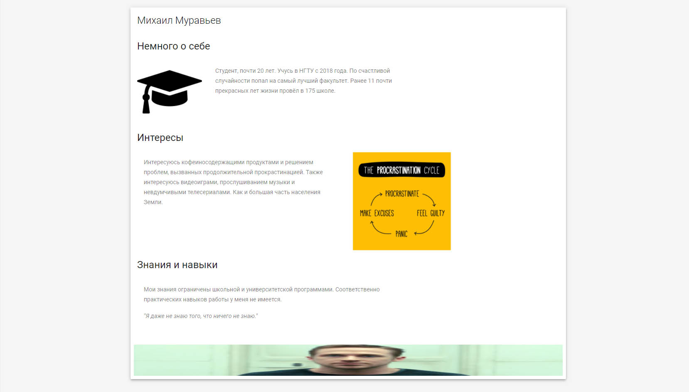

Министерство науки и высшего образования
Российской Федерации
Федеральное государственное бюджетное образовательное
учреждение высшего образования
«НОВОСИБИРСКИЙ ГОСУДАРСТВЕННЫЙ ТЕХНИЧЕСКИЙ УНИВЕРСИТЕТ»
Кафедра теоретической и прикладной информатики
Лабораторная работа №2
по дисциплине "Основы web-программирования"
| Факультет: | ПМИ |
| Группа: | ПМИ-81 |
| Бригада: | 10 |
| Студенты: | Демидович Е.Ю. Муравьев М.И. |
| Преподователь: | Цыгулин А.А. |
Новосибирск
2020
Цель работы:
Ход работы:
-
Секция Демидовича Егора:
-
Секция Муравьева Михаила:

-
Код секции страницы на языке HTML (Демидович Егор):
-
Код секции страницы на языке HTML (Муравьев Михаил):
-
Код страницы со стилям на языке css:
Результаты:
Создать и оформить html страницу о каждом участнике бригады.
Создать страницу с отчетом по работе в виде html-страницы (включая титульный лист и прочее оформление отчёта).

<section id="egor-section" class="mdl-components-page mdl-components__page" name="Егор Демидович">
<div class="mdl-grid demo-content">
<div class="mdl-grid portfolio-max-width">
<div class="mdl-cell mdl-cell--12-col mdl-card mdl-shadow--4dp">
<div class="mdl-card__title">
<h2 class="mdl-card__title-text">Егор Демидович</h2>
</div>
<div class="mdl-card__media">
<img class="article-image" src="images/ew.jpg" border="0" alt="">
</div>
<div class="mdl-card__supporting-text">
<span>Интересы и умения</span>
</div>
<div class="mdl-grid portfolio-copy">
<h3 class="mdl-cell mdl-cell--12-col mdl-typography--headline">Введение</h3>
<div class="mdl-cell mdl-cell--6-col mdl-card__supporting-text no-padding">
<p>
Я родился в городе Астана (сейчас Нур-Султан), обучался в Назарбаев Интеллектуальной Школе (НИШ).
</p>
<p>
Студент третьего курса Факультета прикладной математики и информатики Новосибирского государственного технического университета.
</p>
<p>
Сейчас мне 20 лет.
</p>
<p>
Иногда я приезжаю в Астану, чтобы встретиться со старыми друзьями и провести время с родными, которые остались на моей Родине.
</p>
</div>
<div class="mdl-cell mdl-cell--6-col">
<img class="article-image" src="https://kazintercool.kz/img/objects/nis/01.jpg" border="0" alt="">
</div>
<h3 class="mdl-cell mdl-cell--12-col mdl-typography--headline">Интересы</h3>
<div class="mdl-cell mdl-cell--6-col">
<img class="article-image" src="https://sun9-50.userapi.com/c637219/v637219343/87519/n5rzqoI2Mn4.jpg" border="0" alt="">
</div>
<div class="mdl-cell mdl-cell--6-col mdl-card__supporting-text no-padding ">
<p>
Интересуюсь последними технологическими открытиями, занимаюсь спортом и не боюсь рисковать.
</p>
<p>
Люблю быть лучшим из лучших.
</p>
<p>
Люблю узнавать новое.
</p>
<p>
Больше всего мне нравится создавать мобильные приложения для своей компании RandGor Studio.
</p>
<p>
Недавно начал изучать применение систем ИИ (Искусственного Интеллекта) для решения бытовых задач.
</p>
</div>
<h3 class="mdl-cell mdl-cell--12-col mdl-typography--headline">Умения</h3>
<div class="mdl-cell mdl-cell--6-col mdl-card__supporting-text no-padding ">
<p>
Имею очень глубокие и широкие познания в программировании.
</p>
<p>
Имел дело практически со всеми известными стеками технологий.
</p>
<p>
Свободно владею иностранными языками: английским и казахским.
</p>
<p>
Когда-то умел делать шпагат.
</p>
</div>
<div class="mdl-cell mdl-cell--6-col">
<img class="article-image" src="https://ot5000.ru/images/portfolio/6-1.jpg" border="0" alt="">
</div>
</div>
</div>
</div>
</div>
</section>
<section id="michael-section" class="mdl-components-page mdl-components__page is-active" name="Михаил Муравьев">
<div class="mdl-grid demo-content">
<div class="mdl-grid portfolio-max-width">
<div class="mdl-cell mdl-cell--12-col mdl-card mdl-shadow--4dp">
<div class="mdl-card__title">
<h2 class="mdl-card__title-text">Михаил Муравьев</h2>
</div>
<div class="mdl-grid portfolio-copy">
<h3 class="mdl-cell mdl-cell--12-col mdl-typography--headline">Немного о себе</h3>
<div class="mdl-cell mdl-cell--2-col">
<img class="article-image" src="https://cdn.iconscout.com/icon/free/png-512/graduation-cap-hat-study-degree-46243.png" border="0" alt="" mdl-cell="">
</div>
<div class="mdl-cell mdl-cell--6-col mdl-card__supporting-text no-padding">
<p>Студент, почти 20 лет. Учусь в НГТУ с 2018 года. По счастливой случайности попал на самый лучший факультет. Ранее 11 почти прекрасных лет жизни провёл в 175 школе.</p>
</div>
<h3 class="mdl-cell mdl-cell--12-col mdl-typography--headline">Интересы</h3>
<div class="mdl-cell mdl-cell--6-col mdl-card__supporting-text no-padding ">
<p>Интересуюсь кофеиносодержащими продуктами и решением проблем, вызванных продолжительной прокрастинацией. Также интересуюсь видеоиграми, прослушиванием музыки и невдумчивыми телесериалами. Как и большая часть населения Земли.</p>
</div>
<div class="mdl-cell mdl-cell--3-col">
<img class="article-image" src="https://qph.fs.quoracdn.net/main-qimg-ad65fd98e9ff251a6347ac781d6dec6e" border="0" alt="">
</div>
<h3 class="mdl-cell mdl-cell--12-col mdl-typography--headline">Знания и навыки</h3>
<div class="mdl-cell mdl-cell--8-col mdl-card__supporting-text no-padding ">
<p>Мои знания ограничены школьной и университетской программами. Соответственно практических навыков работы у меня не имеется.</p>
<p><em>"Я даже не знаю того, что ничего не знаю."</em></p>
</div>
</div>
<div class="mdl-cell mdl-cell--12-col">
<img src="https://www.kino-teatr.ru/movie/kadr/124361/780840.jpg" width="100%" height="75" border="0" alt="">
</div>
</div>
</div>
</div>
</section>
В результате выполнения лабораторной работы мы научились создавать html страницы. Создали страницы с информацией про членов бригады и отчёт.